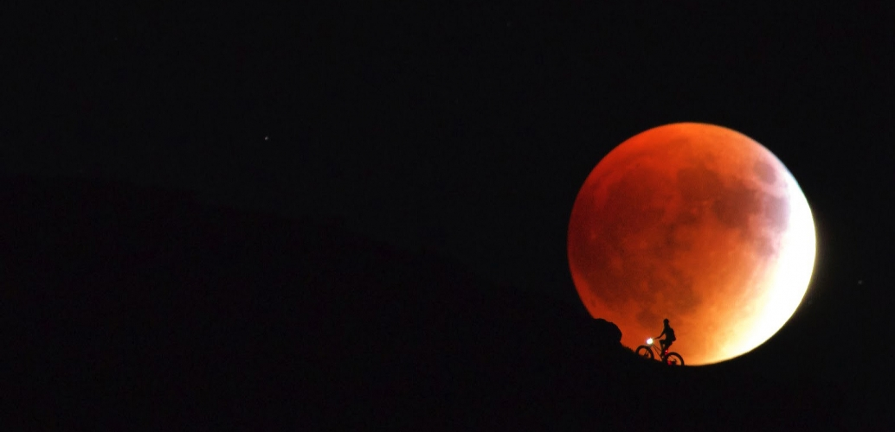
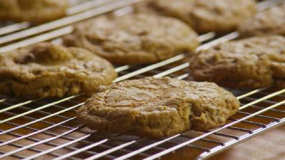

Getro Naissance

About Me.

My Name is Getro Naissance and I am From Fort Lauderdale, Fl. I have a bachelors degree from the University of Florida. I have decided to take a class on programming because the field is quite exciting. Given the fact that I am a lifelong learner, I enjoy that fact that one is never done learning computer science. I am currently working for a startup in Florida by the name of 71lbs. I have been employed at Hollister and the French Department of education
Employment History
- 71LBS
- Hollister
- Department of Education
Interest: Hobbies: Skills:
- Tennis, Coding, Travelling
- MS Office, Ruby, SQL
- Tennis, Soccer, Football
- 71LBS
- Hollister
- Department of Education
Interest: Hobbies: Skills:
- Tennis, Coding, Travelling
- MS Office, Ruby, SQL
- Tennis, Soccer, Football
Hello-World

This is first project that I created at Epicodus. The website simply displays "Hello World. The wesite is was created with only html.
Goodbye

This website only displays goodbye and it was created during my first day at Epicodus. Given its basic nature, it is written entirely with html.
Cookie-Recipe
This website perfectly explicates how to make the perfect batch of cookies. The recipe is clear and succinct. The languages that the site is written in are html and css.
pet-site

This website was created for my dog who is also my best friend. It includes a great picture of him along with some basic information about him.The languages that the site is written in are html and css.
My-First-Webpage

This is the very first website that I created during my first week at Epicodus. I elaborated on the curriculum at Epicodus and I also praise the school for having a great reputation. The languages that the site is written in are html and css.
My-Second-Website

This website is about the city of Port-Au-Prince and its recently renovated downtown area. This project The languages that the site is written in are html and css.